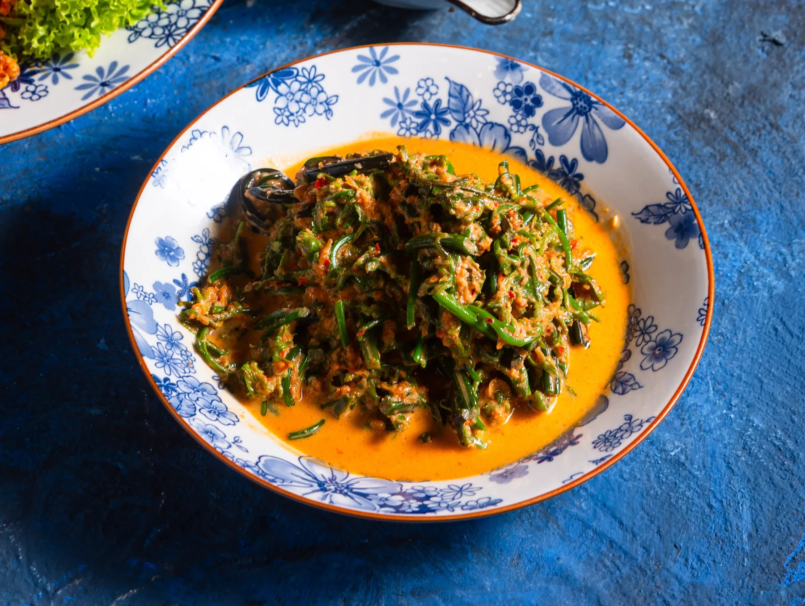
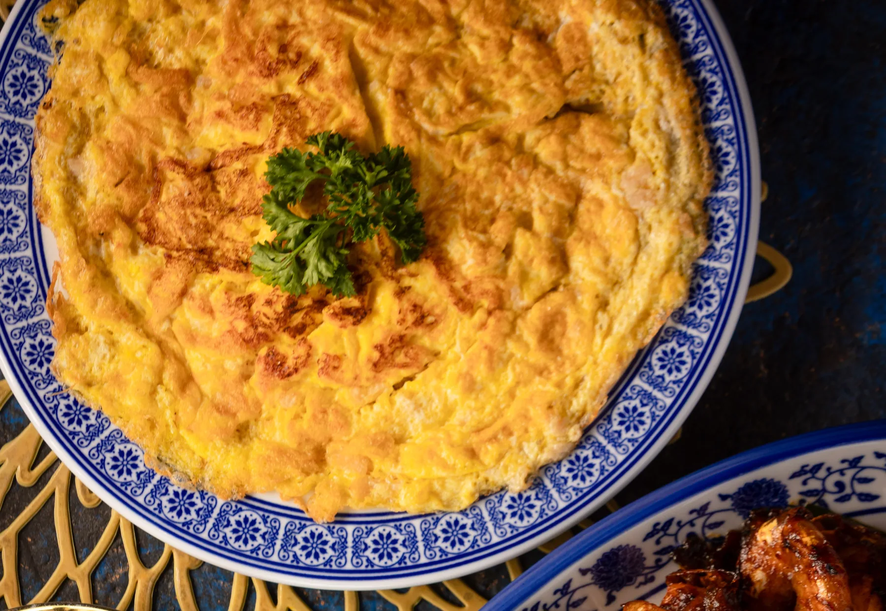

George Town, Penang
Welcome to Auntie’s table.
Thank you for joining us. Auntie Gaik Lean began cooking for her family at twelve. Today her heirloom Nyonya recipes are made by hand, from scratch, on Bishop Street.
We opened in 2013, and the room still feels like the sixties: cobalt walls, Peranakan tiles and big tables for ten or more.
2013Opened
OneMICHELIN Star
4 yearsRunning
Three to start with
Where we’d begin

Curry Kapitan
A rich, spiced Nyonya chicken curry.

Kerabu Pucuk Paku
A fresh fern-shoot salad, bright and herby.

Chye Por Omelette
A golden omelette with preserved radish.
Book a table
Booking ahead is advised. Wednesday to Sunday.
Open Wed–Sun
Lunch 12pm–2.30pm · Dinner 6pm–9.30pm
Closed Monday and Tuesday
1 Lebuh Bishop, George Town, 10200 Penang
+60 17-434 4398 · @auntiegaiklean
You are receiving this because you joined our list.